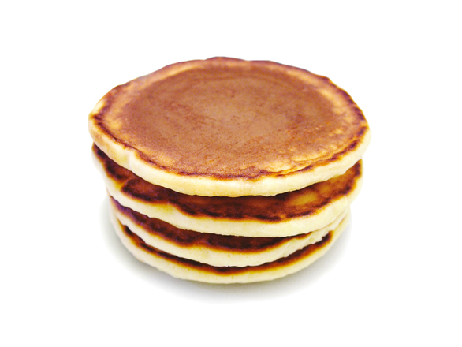

When you get up in the morning, don't you crave for delicious pancakes? I know I do! In this website, you will learn how to make a simple pancake. Good luck!
Mix ingredients together in a large/small bowl
Heat frying pan to medium hear
Pour the tter onto the frying pan
Make sure both sides are brown
Enjoy it with some syrup!